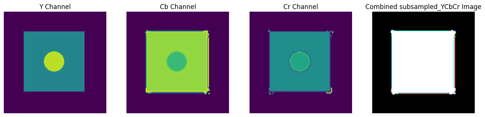
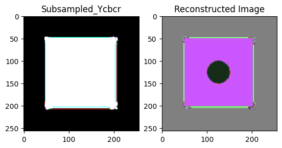

Human eyes are more sensitive to brightness than color (Since we have more rods as compared to cones in our retina). So to achieve compression with minimal loss in percieved vision quality, we will keep the data in the intensity domain as it is and compress the data in colour domain. The intensity domain is formally called the luminosity(Y) and the colour domains are (Cb and Cr). We will first convert the image from RGB channels to YCbCr channels.
Chroma subsampling involves reducing the resolution of the chrominance channels while keeping the luminance channel at full resolution
4:2:0 Chroma Subsampling: Both horizontal and vertical subsampling is applied. For every two pixels in both the horizontal and vertical directions, there is one chrominance value.
We will basically take 2x2 matrix from the image channels Cb and Cr, take their average and represent it using a single pixel.
WARNING:matplotlib.image:Clipping input data to the valid range for imshow with RGB data ([0..1] for floats or [0..255] for integers).
(256, 256, 3)

##DCT DCT or Discrete Cosine Transform works on a principle similar to the fourier transform. It breaks down frequencies as a sum of cosine functions. We calculate dct coefficients for 8x8 matrices which are then represented as a weighted sum of the components.
from scipy.fftpack import dct, idctimage = c_ycbcr_image-128block_size =8dct_coefficients = np.zeros_like(image, dtype=np.float32)for i inrange(0, 256, block_size):for j inrange(0, 256, block_size): block = image[i:i+block_size, j:j+block_size] dct_block = dct(dct(block, axis=0, norm='ortho'), axis=1, norm='ortho') dct_coefficients[i:i+block_size, j:j+block_size] = dct_block# Inverse DCT to recover the original imagereconstructed_image = np.zeros_like(image, dtype=np.uint8)for i inrange(0, 256, block_size):for j inrange(0, 256, block_size): dct_block = dct_coefficients[i:i+block_size, j:j+block_size] block = idct(idct(dct_block, axis=0, norm='ortho'), axis=1, norm='ortho') reconstructed_image[i:i+block_size, j:j+block_size] = np.round(block)# Display the original and reconstructed imagesplt.subplot(121)plt.imshow(c_ycbcr_image, cmap='gray', interpolation='nearest')plt.title('Subsampled_Ycbcr')plt.subplot(122)plt.imshow(reconstructed_image, cmap='gray', interpolation='nearest')plt.title('Reconstructed Image')plt.show()# see open cv output too
WARNING:matplotlib.image:Clipping input data to the valid range for imshow with RGB data ([0..1] for floats or [0..255] for integers).

An interesting observation is that the reconstructed image after taking dct and then idct we see the appearance of the ellipse drawn in the original image which was lost after chroma subsampling. This tells us that it does not mean if we cant see something its not there but the information might be still contained.
In this code, two quantization tables are defined: QTy for the luminance (Y) channel and QTC for the chrominance (Cb and Cr) channels. These tables play a fundamental role in quantization by specifying the values by which the DCT (Discrete Cosine Transform) coefficients are divided to achieve compression.
The luminance quantization table (QTy) and chrominance quantization table (QTC) contain specific values that determine the trade-off between image quality and compression ratio. Higher values in these tables lead to more aggressive quantization and higher compression, but at the cost of reduced image quality.
Block-Based Quantization
The code demonstrates block-based quantization for the Y, Cb, and Cr channels separately. The code iterates through the image in 8x8 blocks, applies quantization to each block based on the corresponding quantization table, and stores the quantized values in separate arrays (quantized_y, quantized_cb, and quantized_cr).
Counting Non-Zero Values
The code concludes by using np.count_nonzero() to count the number of non-zero values in the quantized image (quantised). This count represents the number of coefficients that were quantized to a non-zero value during compression, and it can provide insights into the level of compression achieved.